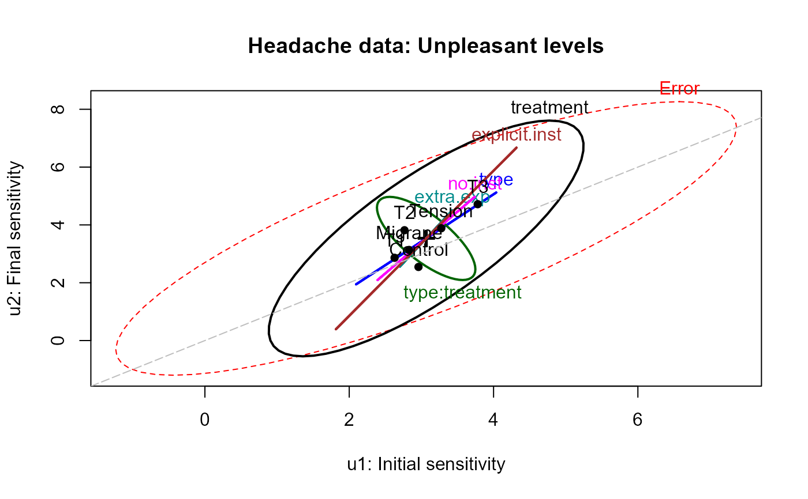
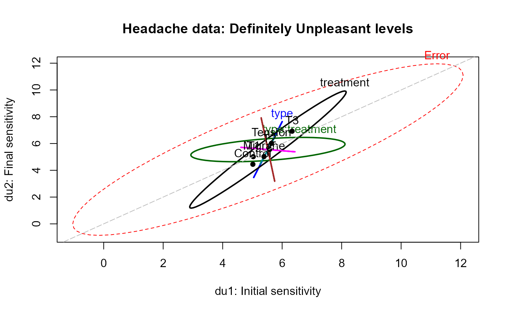
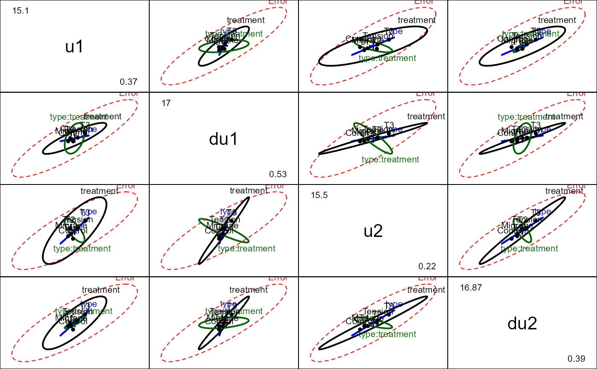

Headache.RdA study was conducted investigating the effectiveness of different kinds of psychological treatment on the sensitivity of headache sufferers to noise, described in Hand and Taylor (1987), Study E.
In a pre-post design, 98 patients were first assessed for the volume of noise which they found uncomfortable (U) and definitely uncomfortable (DU). They were then given relaxation training, where they listened to the noise at the DU level and given instruction breathing techniques and the use of visual imagery to distract them from discomfort. One of four treatments was then applied, and all patients were reassessed for the noise volume they considered uncomfortable (U) and definitely uncomfortable (DU).
data(Headache)A data frame with 98 observations on the following 6 variables.
typeType of headache, a factor with levels Migrane Tension
treatmentTreatment group, a factor with levels T1 T2 T3 Control. See Details
u1Noise level rated as Uncomfortable, initial measure
du1Noise level rated as Definitely Uncomfortable, initial measure
u2Noise level rated as Uncomfortable, final measure
du2Noise level rated as Definitely Uncomfortable, final measure
The treatments are described as follows:
T1Listened again to the tone at their initial DU level, for the same amount of time they were able to tolerate it before.
T2Same as T1, with one additional minute exposure
T3Same as T2, but were explicitly instructed to use the relaxation techniques
ControlThese subject experienced no further exposure to the noise tone until the final sensitivity measures were taken
Hand and Taylor described several substantive hypotheses related to the differences
among treatments. In the Headache data frame, these have been included as
contrasts(Headache$treatment)
D. J. Hand and C. C. Taylor (1987). Multivariate analysis of variance and repeated measures: a practical approach for behavioural scientists London: Chapman and Hall. ISBN: 0412258005. Table E.1.
data(Headache)
str(Headache)
#> 'data.frame': 98 obs. of 6 variables:
#> $ type : Factor w/ 2 levels "Migrane","Tension": 1 1 2 1 1 1 1 1 1 2 ...
#> $ treatment: Factor w/ 4 levels "T1","T2","T3",..: 3 1 1 3 3 3 2 1 1 3 ...
#> ..- attr(*, "contrasts")= num [1:4, 1:3] 1 -1 0 0 1 1 0 -2 0 0 ...
#> .. ..- attr(*, "dimnames")=List of 2
#> .. .. ..$ : chr [1:4] "T1" "T2" "T3" "Control"
#> .. .. ..$ : NULL
#> $ u1 : num 2.34 2.73 0.37 7.5 4.63 3.6 2.45 2.31 1.38 0.85 ...
#> $ du1 : num 5.3 6.85 0.53 9.12 7.21 7.3 3.75 3.25 2.33 1.42 ...
#> $ u2 : num 5.8 4.68 0.55 5.7 5.63 4.83 2.5 2 2.23 1.37 ...
#> $ du2 : num 8.52 6.68 0.84 7.88 6.75 7.32 3.18 3.3 3.98 1.89 ...
# basic MLM, specifying between-S effects
headache.mod <- lm(cbind(u1, du1, u2, du2) ~ type * treatment, data=Headache)
##############################
## between-S tests
##############################
Anova(headache.mod, test="Roy")
#>
#> Type II MANOVA Tests: Roy test statistic
#> Df test stat approx F num Df den Df Pr(>F)
#> type 1 0.042678 0.9283 4 87 0.451426
#> treatment 3 0.136154 3.0294 4 89 0.021609 *
#> type:treatment 3 0.161202 3.5867 4 89 0.009281 **
#> ---
#> Signif. codes: 0 '***' 0.001 '**' 0.01 '*' 0.05 '.' 0.1 ' ' 1
# test each contrast separately
print(linearHypothesis(headache.mod, hypothesis="treatment1", test="Roy"), SSP=FALSE)
#>
#> Multivariate Test:
#> Df test stat approx F num Df den Df Pr(>F)
#> Roy 1 0.01305284 0.2838993 4 87 0.88769
print(linearHypothesis(headache.mod, hypothesis="treatment2", test="Roy"), SSP=FALSE)
#>
#> Multivariate Test:
#> Df test stat approx F num Df den Df Pr(>F)
#> Roy 1 0.08267735 1.798232 4 87 0.13645
print(linearHypothesis(headache.mod, hypothesis="treatment3", test="Roy"), SSP=FALSE)
#>
#> Multivariate Test:
#> Df test stat approx F num Df den Df Pr(>F)
#> Roy 1 0.1902026 4.136907 4 87 0.0040827 **
#> ---
#> Signif. codes: 0 '***' 0.001 '**' 0.01 '*' 0.05 '.' 0.1 ' ' 1
heplot(headache.mod, variables=c(1,3),
hypotheses=paste("treatment", 1:3, sep=""),
hyp.labels=c("extra.exp", "no.inst", "explicit.inst"),
xlab="u1: Initial sensitivity", ylab="u2: Final sensitivity",
main="Headache data: Unpleasant levels")
abline(0, 1, lty=5, col="gray")

heplot(headache.mod, variables=c(2,4),
hypotheses=paste("treatment", 1:3, sep=""),
xlab="du1: Initial sensitivity", ylab="du2: Final sensitivity",
main="Headache data: Definitely Unpleasant levels")
abline(0, 1, lty=5, col="gray")

pairs(headache.mod)

##############################
# between-S and within-S tests
##############################
idata = expand.grid(level=factor(c("U", "DU")), phase=factor(1:2))
Anova(headache.mod, idata=idata, idesign=~level*phase)
#>
#> Type II Repeated Measures MANOVA Tests: Pillai test statistic
#> Df test stat approx F num Df den Df Pr(>F)
#> (Intercept) 1 0.64648 164.580 1 90 < 2e-16 ***
#> type 1 0.00691 0.627 1 90 0.43072
#> treatment 3 0.04122 1.290 3 90 0.28275
#> type:treatment 3 0.00118 0.035 3 90 0.99106
#> level 1 0.60226 136.276 1 90 < 2e-16 ***
#> type:level 1 0.00000 0.000 1 90 0.99653
#> treatment:level 3 0.00660 0.199 3 90 0.89661
#> type:treatment:level 3 0.05360 1.699 3 90 0.17287
#> phase 1 0.02459 2.269 1 90 0.13546
#> type:phase 1 0.02267 2.088 1 90 0.15193
#> treatment:phase 3 0.08074 2.635 3 90 0.05459 .
#> type:treatment:phase 3 0.06236 1.995 3 90 0.12033
#> level:phase 1 0.03465 3.231 1 90 0.07563 .
#> type:level:phase 1 0.00820 0.744 1 90 0.39070
#> treatment:level:phase 3 0.02164 0.663 3 90 0.57669
#> type:treatment:level:phase 3 0.03475 1.080 3 90 0.36173
#> ---
#> Signif. codes: 0 '***' 0.001 '**' 0.01 '*' 0.05 '.' 0.1 ' ' 1